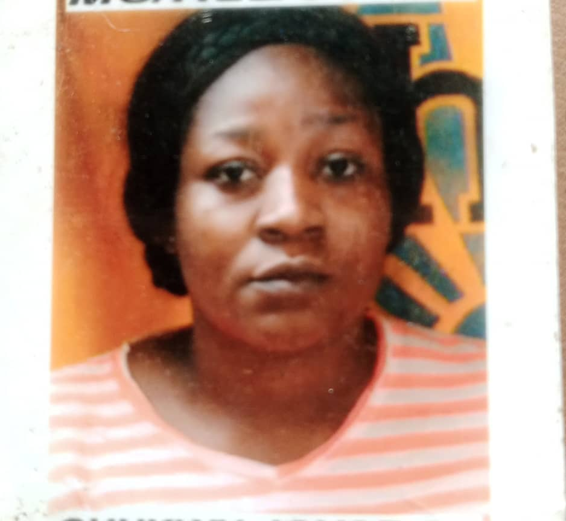

Joyce Chukwuma

Summary:
A reliable mass communicator with good experience and skills, Seeking a challenging role in a prestigous organization to contribute massively to the growth of the organization and also to increase my knowledge.
Education:
-
NYSC Discharge Certificate March 2022 - March 2023 (Technology Time)
BUSINESS/ MARKETING ANALYST
Technology Time Company
-
HIGHER NATIONAL DIPLOMA (HND) IN MASS COMMUNICATION
Institute of Management and Technology (IMT), Enugu 2018 -2021
-
NATIONAL DIPLOMA (ND) IN MASS COMMUNICATION
Institute of Management and Technology (IMT), Enugu 2011-2013
-
SENIOR SECONDARY SCHOOL CERTIFICATE EXAMINATION (SSCE)
Morning Star Comprehension College, Oyibo Rivers State 2003-2008
-
FIRST SCHOOL LEAVING CERTIFICATE EXAMINATION (F.S.L.C)
Ezechima Primary School, Anambra State 1998-2003
Work Experience:
TEAM LEAD – Telemarketing
FINNEW COMPANY April 2022 – Present
- Coach team members the best way to carry out their duties.
- Ensure that customers are highly esteemed so as to keep patronizing the company.
- Create good relationships with team members and motivate them to put in their best to work in other to attain optimal results.
- Inform Customers about all the products in the company, their uses and benefits.
TELEMARKETER/LOAN RECOVERY OFFICER
Blue Ridge Micro Finance Bank April 2021- March 2022
- Maintained record of contacts, accounts and orders.
- Delivered prepared sales talk, reading from a script that describes products and services, to persuade customers to purchase products and services.
- Adjusted sales script to better target the needs and interest of specific individuals.
- Built a friendly relationship with customers
SUPERVISOR
Roneks Hotel Sasha January 2016 – January 2018
- Organized workflow tasks to prevent downtime.
- Taught company procedures to new employees, identifying and tackling areas of weakness.
- Ensured that guests are satisfied with our service.
- Motivated employees to reach their highest professional potential.
Certifications And Awards:
Hobbies
Reading and Socializing
Contact
Phone: 08063605246
amarajoycechukwuma@gmail.com
Referee